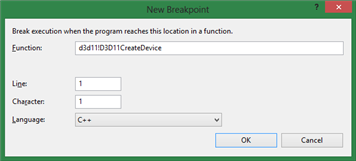
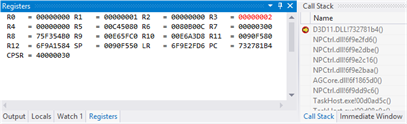
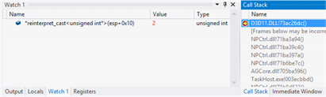

Windows Phone 8: Debugging
Visual Studio can be used to debug C# scripts:
- Build Visual Studio project.
- Open generated solution.
- Click FILE -> Add -> Exiting Project..., navigate to Unity project folder and select Assembly-CSharp.csproj file.
- Go to BUILD -> Configuration Manager... and make sure ARM platform is selected for your project.
- Optionally uncheck Build flag for Assembly-CSharp since it has already been built by Unity.
- Add breakpoint(s) to your script file(s).
- Make sure phone is connected to PC and is unlocked.
- Make sure debugger type is set to Managed Only (default).
- Hit F5 to build, deploy, run and debug your app.
If debugging doesn't help to resolve your issue it might be useful to examine UnityPlayer.log file. It's located on the phone and can be retrieved by utility called Windows Phone Power Tools. Don't forget to include this file with your bugs reports.
Enabling Direct3D Debug Layer
(Based on Jeff McGlynn's blog post)
- Configure the project for native debugging.
- Open the project properties.
- Navigate to the Debug tab.
- Change the UI Task debugger type to “Native Only”.
- Enable Microsoft Symbols:
- Tools->Options->Debugging->Symbols, check Microsoft Symbol Servers, if it's not already check
- Go to Tools->Options->Debugging->General, uncheck Enable Just My Code.
Set a breakpoint on d3d11!D3D11CreateDevice. This can be done by selecting New Breakpoint -> Breakpoint at Function in the breakpoints window.

After hitting the breakpoint modify the Flags parameter to enable the debug layer by ORing it with D3D11_CREATE_DEVICE_DEBUG (0x02):
On ARM: Change r3 to “2”.

On x86: Set a watch on the expression (unsigned int)(esp+0x10) and change its value to “2”.
